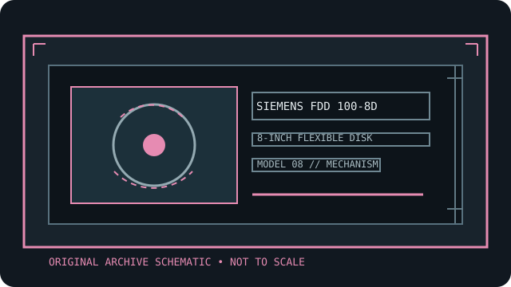

[ INDIVIDUAL COMPONENT // FLOPPY DRIVES ]
Siemens FDD 100-8D 8-inch floppy drive
This record identifies a real, model-specific 8-inch diskette mechanism. Format capacity and host fit depend on the documented revision, interface options, controller, recording mode, and media; values are not inferred from form factor alone.

IDENTIFICATION NOTE: Siemens FDD 100-8D is a bare mechanism/drive model, not a generic PC floppy peripheral. Match the full label, PCB revision, connector and voltage configuration to the cited manual before connecting or servicing it.
Model specifications
| Catalog subcategory | 8-inch floppy mechanisms |
|---|---|
| Exact model / family | Siemens FDD 100-8D 8-inch floppy drive |
| Disk format and capacity | 8-inch flexible disk drive. The Siemens manual distinguishes supported diskette formats and capacity in its format/performance tables; actual formatted capacity depends on format, recording mode, and compatible controller. Confirm applicability to the 100-8D revision. |
| Host interface | OEM technical manual documents signal, DC-power, interface timing, and system configurations; it includes binary/radial select and installation options. Use those pinouts rather than assuming PC wiring. |
| Data rate | The technical manual provides model timing and data-transfer specifications. Select controller clock/encoding from the matching FDD 100-8D format table; do not borrow values from other 8-inch drives. |
| Drive select / jumpers | Manual options include binary select, radial select, and interface/internal option links. Set one address per drive, match controller selection mode, and preserve termination and readiness settings before changing shunts. |
| Dimensions / mounting | The manual has a model-specific physical dimension and mounting section. Use the correct 100-8D drawing for cabinet clearance and mounting; FDD family suffixes may use different frames. |
| Power requirements | Follow the model manual’s AC and DC power tables and the drive nameplate. Do not assume host-supplied DC alone is sufficient or apply PC power; confirm mains voltage selection, grounding, rail polarity, and connector pinout. |
| Controller / host compatibility | Use with a controller and software supporting the Siemens documented 8-inch format and interface. Binary/radial selection, data timing, ready behavior, and disk geometry must match the FDD 100-8D manual. |
Model-specific compatibility checks
- Record the complete model suffix, serial/date code, board revision, connector keying, and all drive-select or option links before installation.
- Confirm controller signaling, line termination, host drive-select assignment, recording density, sector geometry, and the manual’s power connector pinout as a single compatible configuration.
- Do not connect by connector shape alone. An 8-inch drive may require non-PC signal conventions, additional DC rails, or a mains-rated supply; follow the model documentation.
Preservation and safety notes
This mechanism’s service manual includes powered tests and adjustment procedures: qualified service only, with isolation and the proper test fixtures. Inspect media, avoid undocumented adjustments, and acquire verified images before writes or repair.
For archival work, preserve original media in its native format, make a verified read-only acquisition first, checksum retained copies, and log the drive, controller, software, media condition, and any service or conversion performed.
Manufacturer manuals & archive sources
- Siemens FDD 100-8 V1 Technical Manual (Internet Archive/Bitsavers)Archived technical manual covering the FDD 100-8D model, operation, interface, installation, and service.
- Siemens FDD100-8 V1 scanned technical manual PDFDirect archival copy of the Siemens technical manual; verify volume/model suffix against the unit.
Consult the exact model/revision manual before applying electrical or service values. Family references are useful only where their coverage matches the marked unit.